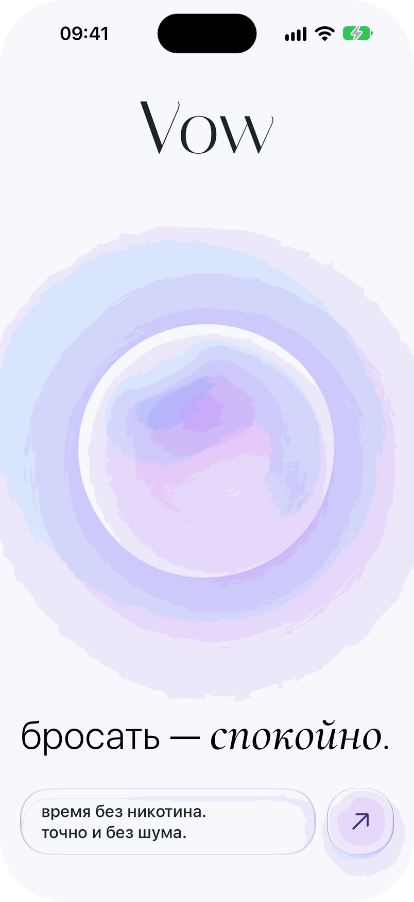
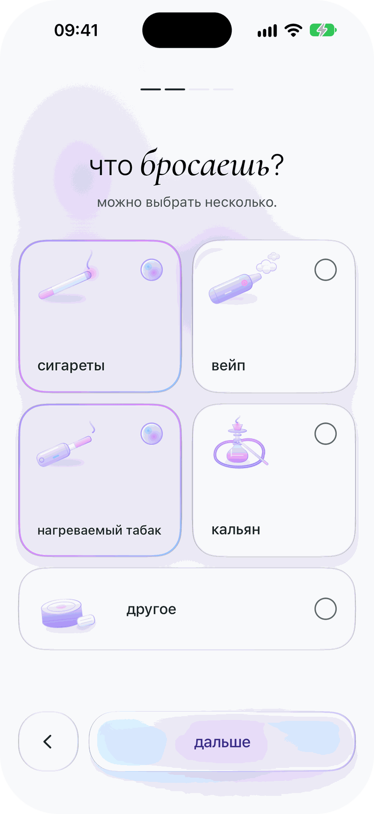
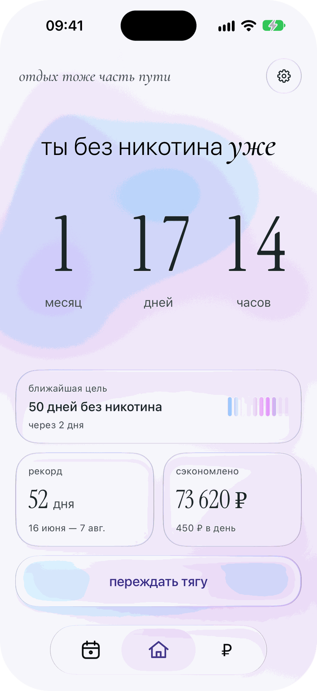
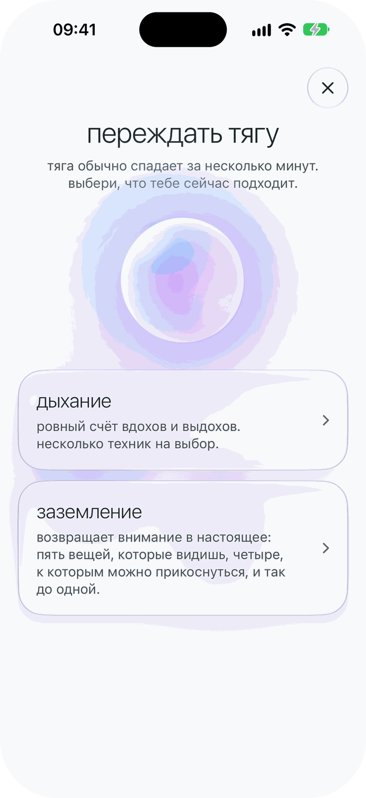
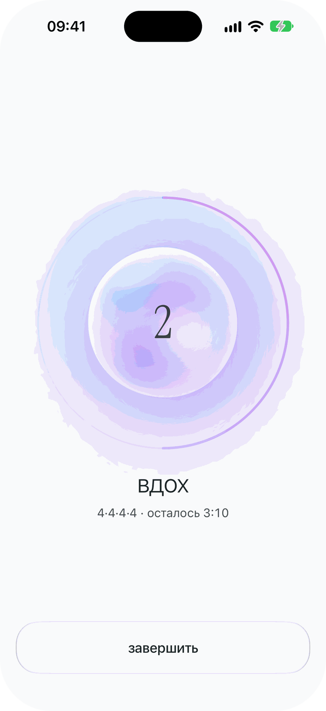
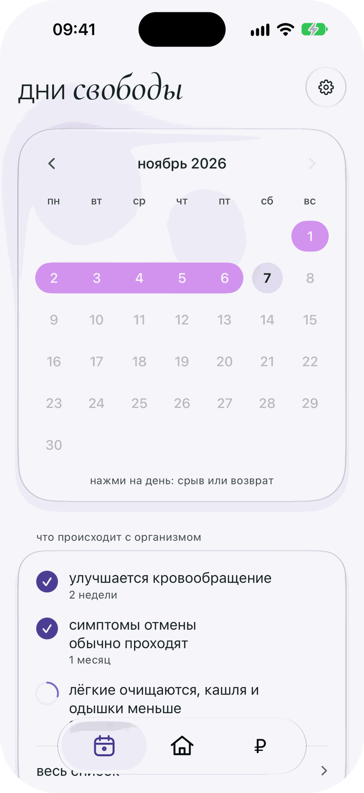
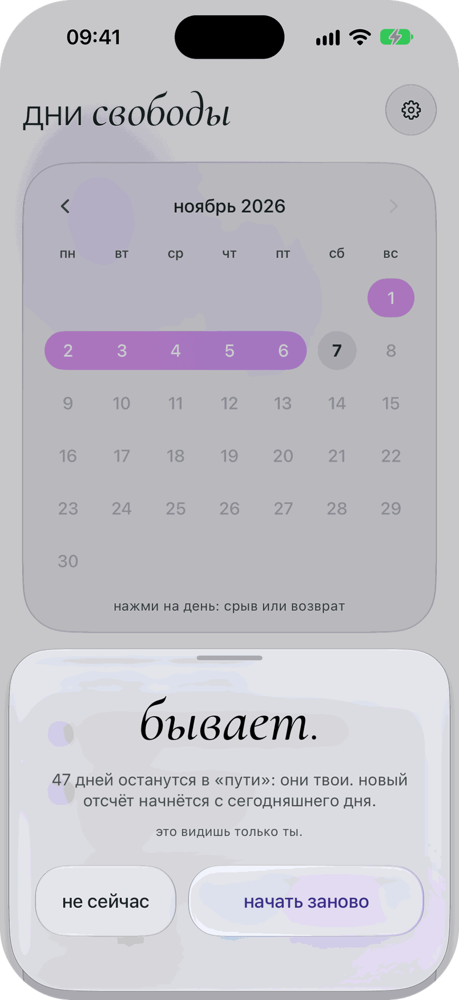
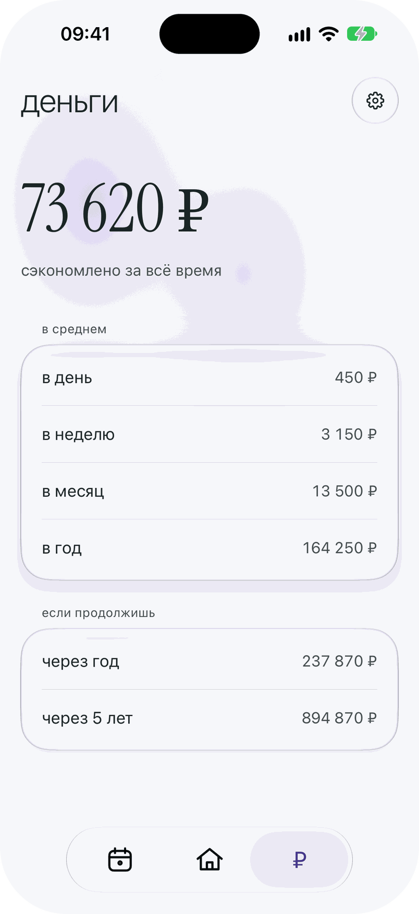
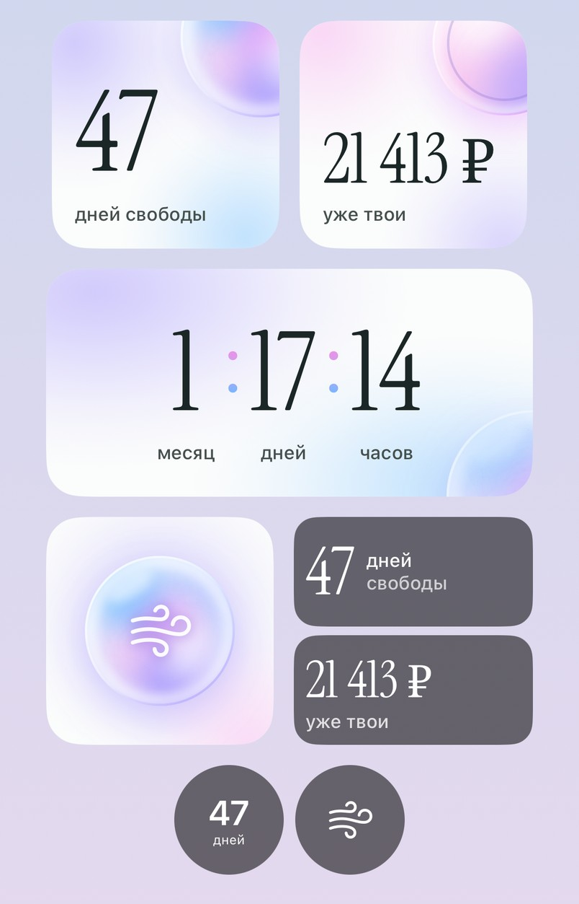

Редизайн оформления подписки
Учебный проект: редизайн подписки, где тарифы описаны неявно, а автопродление спрятано. Тест на трёх респондентах: SUS 91.7, SEQ 6.3.
Приложения для отказа от курения шумят там, где человеку нужна тишина. Я сделал тихое: счётчик дней без никотина, деньги, четыре виджета и «переждать тягу». Без аккаунта, рекламы, бейджей и чата, данные остаются на телефоне.

Я разобрал семь популярных приложений и прочитал отзывы их пользователей: хвалят простые честные цифры, ругают шум вокруг них. Из этого получились пять пар.
Приложение собрано и работает на моём iPhone: онбординг из четырёх шагов, три вкладки, четыре виджета, русский и английский, светлая и тёмная темы. Каждый экран описан сценариями, их закрывают 71 UI-тест и 68 тестов на логику.
Метрик использования пока нет: приложения нет в App Store, в TestFlight его никто не получал. Есть живой прогон с одним человеком: его вопрос поменял навигацию.
Исследование, принципы, девять решений с вариантами и две версии дизайна →
Весь путь человека: от первого запуска до срыва и денег.









Идея, исследование, приоритизация, характер и голос, визуальный язык, все продуктовые решения и ревью каждой сборки на телефоне. Код писал Claude Code по моим решениям, дизайн-системы собирал Claude Design по моим промптам: я отвечаю за что и зачем, они — за как.
Учебный проект: редизайн подписки, где тарифы описаны неявно, а автопродление спрятано. Тест на трёх респондентах: SUS 91.7, SEQ 6.3.

Инструмент менеджера полевого аудита: карта, статусы, маршруты. Менеджеры и заказчики отметили: от звонков полностью ушли.

Админ-панель установки оборудования: группы, установщики и транспорт в одном портале. В проде, им пользуются до сих пор.